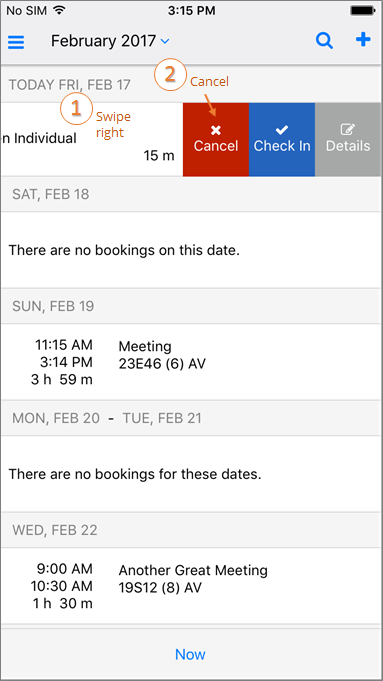

- If you are able to Cancel the meeting, a Cancel option will appear when you swipe right. The meeting organizer or booking template usually determines your permissions control and whether you can cancel a meeting. If enabled, attendees will be notified.

- Tap on the event and click Edit in the upper right-hand corner. Click Cancel.